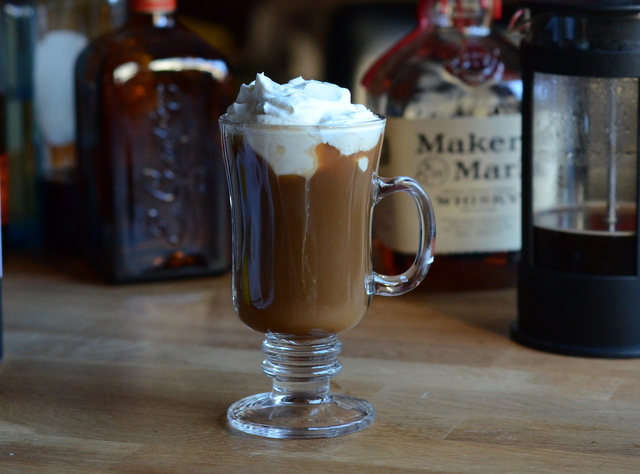

Kentucky is known for its bourbon, so what better alcohol to mix with coffee could there be for the authentic taste of the American South?
What You'll Need
- 1 oz bourbon
- ½ oz Kahlua
- Dash of vanilla extract
- Sugar to taste
- Whipped cream
- 6 oz hot coffee
Fill your glass about ¾ with hot coffee. Add the bourbon, Kahlua, and a splash of vanilla.
Sweeten with sugar to taste, and slowly pour the cream so that it rests on top.
Sit back and enjoy the taste of the South.